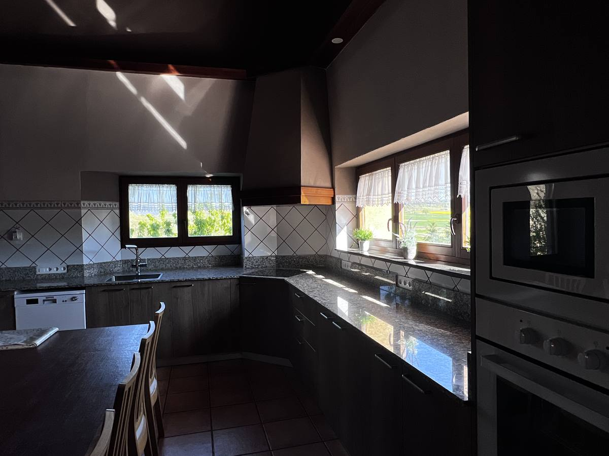
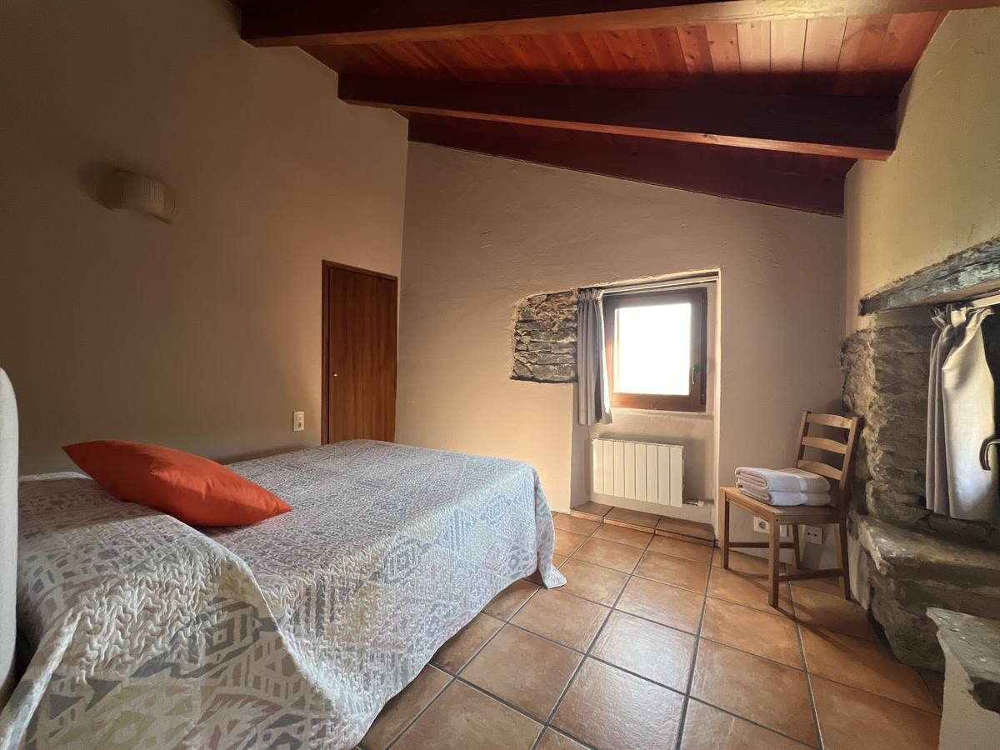

La nostra història
Una masia viva
des del 1682
"Aquí el temps s'atura. I és exactament el que necessitaves."
La Casa Vella del Cuní és una masia de pedra del segle XVII situada a Roda de Ter, al cor de la plana de Vic. Conserva l'estructura original amb arcs de mig punt, bigues de fusta i parets de pedra, combinades amb les comoditats modernes necessàries per a un descans complet.
El Jordi i la família la posen a disposició de grups que busquen un espai privat, ampli i autèntic: celebracions familiars, escapades entre amics, retirs d'empresa o estades rurals tranquil·les.


